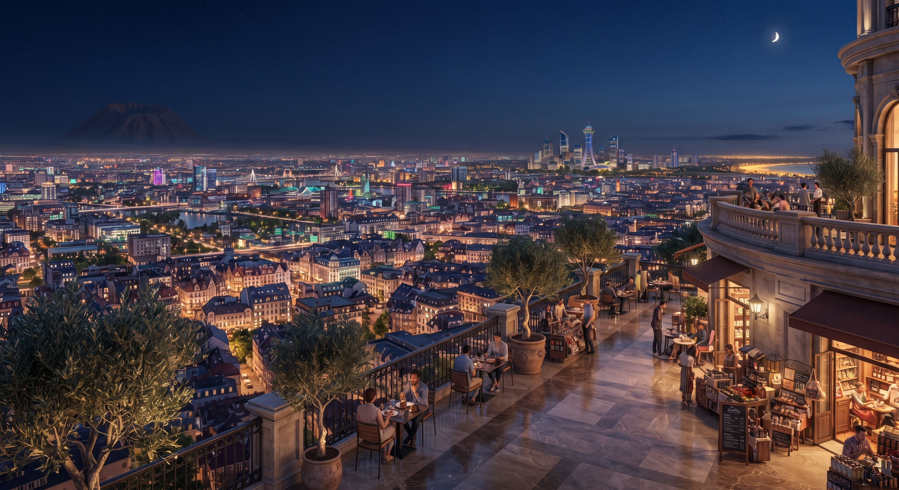
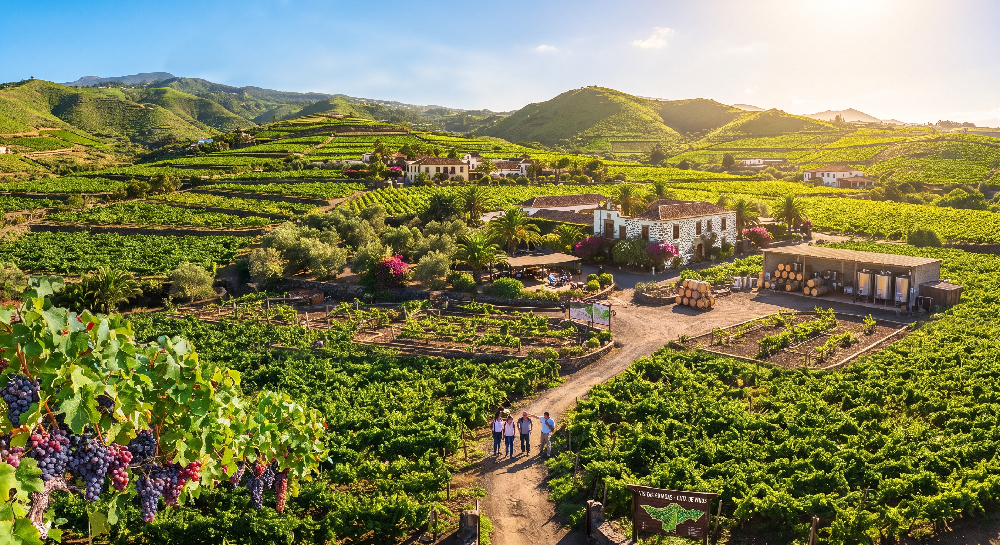
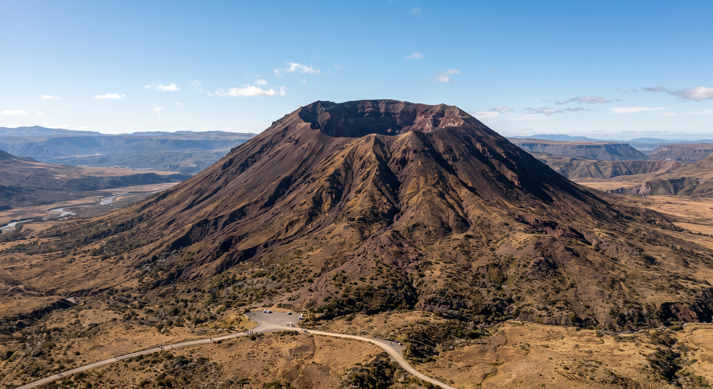
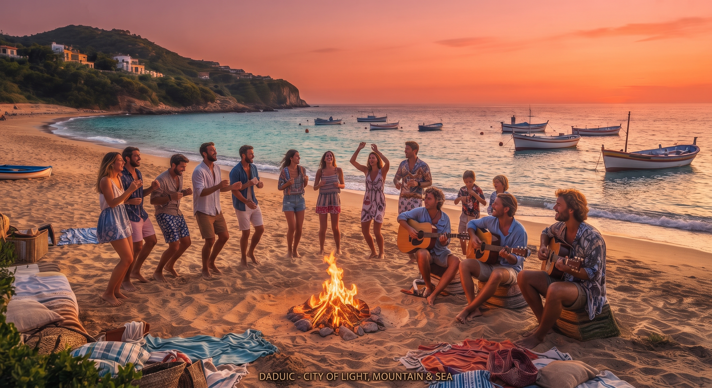
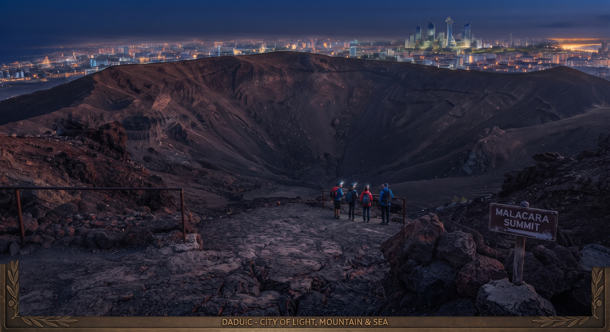
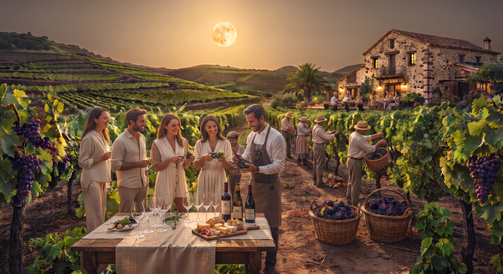
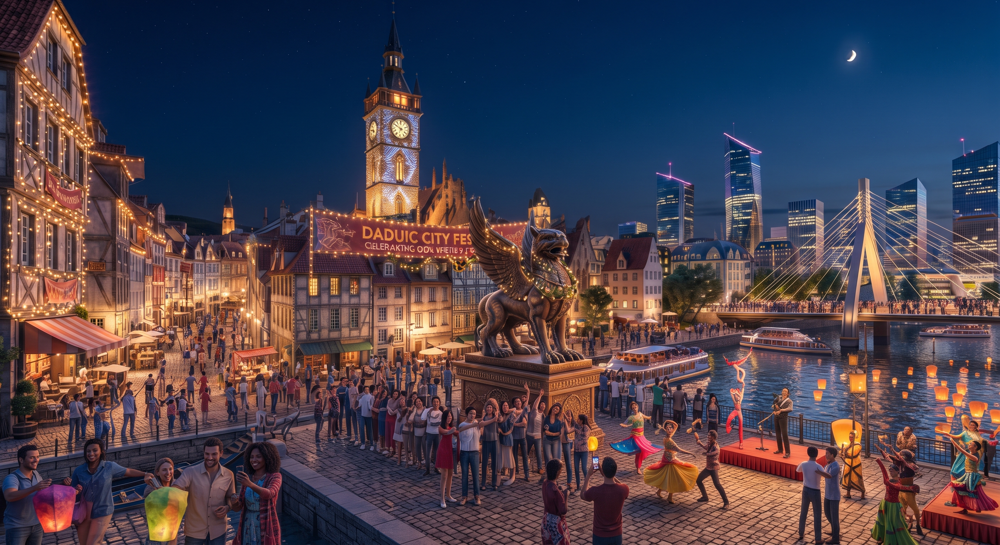
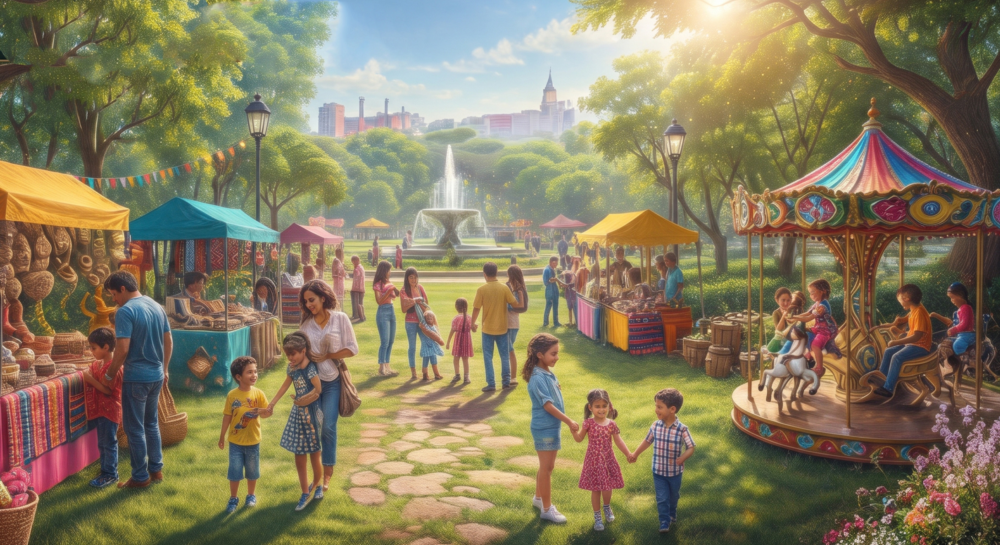
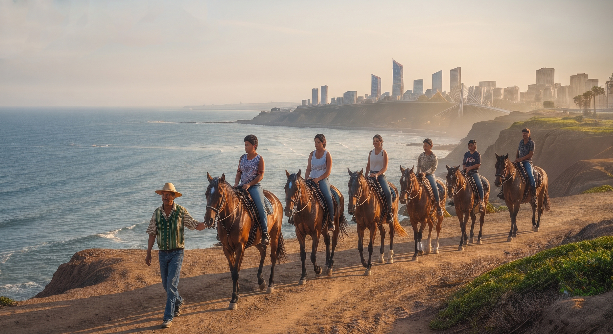

Para cualquier duda o consulta puede contactarse con nosotros a traves del siguiente link Contacto.
Viví la energía única de la ciudad en cada rincón. Un lugar donde la modernidad, la cultura y el movimiento constante se fusionan para ofrecerte experiencias inolvidables. Ya sea que busques descubrir nuevos horizontes, disfrutar de su movida urbana o simplemente dejarte llevar por su horizonte imponente, aquí cada día es una nueva aventura. ¡Conectá con el corazón urbano y animate a descubrir todo lo que tiene preparado para vos!

Capital de Daduica
Playa Cafune

Viñedo Tacoronte

Vólcan Malacara






Para cualquier duda o consulta puede contactarse con nosotros a traves del siguiente link Contacto.